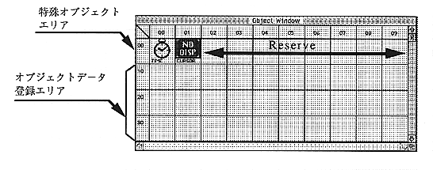

Special object area
The first level of the object window is a special object area provided by the author editor. 02 to 09 are reserved areas and are not used.
TIME object
An object that generates a timeout event. You can place an action in the TIME object placement area of the scenario. The action event can specify a timeout, and the set action will be executed when the set time is reached.
NO DISP object
This object does not display the cursor on the screen. You can place actions in the cursor object placement area of the scenario and set actions.
Object data registration area
Select “Load Object” from the File menu and register the necessary objects. The registration locations are ordered from the 10th area. The order of registration has no particular meaning. Since the registration position cannot be changed later, it is better to plan the registration order when registering many objects.